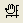
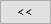
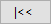
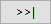

Macのキーボードの場合、Windowsのショートカットキーと異なるものがありますので、ご注意ください。そのようなホットキーについては、対応表を参照してください。
Originでは、キーボードのキーの組み合わせで素早くアクションを実行できます。 キーの組み合わせとして変更キー（たとえばCTRL,ATL,またはSHIFT)と付属キー（たとえば、文字キー、矢印キーまたはFキー）で行います。
Macのキーボードの場合、Windowsのショートカットキーと異なるものがありますので、ご注意ください。そのようなホットキーについては、対応表を参照してください。 |
Originのホットキー/アクセラレータキー/キーボードショートカットのリスト
| ホットキー | メニュー/アクション | コンテキスト |
|---|---|---|
| Ctrl + N | ファイル: 新規作成... | 新規 ダイアログを開きます。 |
| Ctrl + Alt + I | ファイル：新規作成：イメージ：画像/動画 | Imagesダイアログを開きます。詳細はこちらのページを参照してください。 |
| Ctrl + Alt + T | ファイル：新規作成：イメージ：複数画像ファイル | 複数ファイルに接続ダイアログを開きます。詳細はこちらのページを参照してください。 |
| Ctrl + Alt +L | ファイル：新規作成：イメージ：Web画像... | 画像URLを入力ダイアログを開きます |
| Ctrl + O | ファイル: 開く... | 開く ダイアログを開きます。 |
| Ctrl + P | ファイル: 印刷 | 印刷ダイアログを開きます。 |
| Ctrl + S | ファイル： プロジェクト保存 | 現在のプロジェクトを保存します。（もしプロジェクトが一度も保存されていない場合、「名前を付けて保存」ダイアログが出てきます。） |
| Ctrl + F4 | アクティブなワークシート/グラフ/行列 ウィンドウを閉じます。 | |
| Ctrl + F6 | 次のウィンドウに移動します。 | 次にあるウィンドウをアクティブにします。 |
| Alt + 1 | 表示：プロジェクトエクスプローラ | プロジェクトエクスプローラを開きます。 |
| Alt + 2 | 表示：結果ログ | 結果ログの内容を開きます。 |
| Alt + 3 | 表示: コマンドウィンドウ ウィンドウ : コマンドウィンドウ |
コマンドウィンドウを開きます。 |
| Alt + 4 | 表示：コードビルダ | コードビルダを開きます。 |
| Alt + 5 | 表示：クイックヘルプ | クイックヘルプを開きます。 |
| Alt + 6 | 表示：メッセージログ | メッセージログを開きます。 |
| Alt + 7 | 表示：スマートヒントログ | スマートヒントログを開きます。 |
| Alt + 8 | 表示：オブジェクトマネージャ | オブジェクトマネージャを開きます。 |
| Alt + 9 | 表示：アプリ | アプリを開きます。 |
| Alt + Shift +3 | ウィンドウ：スクリプトウィンドウ | スクリプトウィンドウを開きます。 |
| Ctrl + Alt + Z | ウィンドウ：最後のウィンドウに戻る | 前のアクティブウィンドウに戻ります。 |
| F2 | プロジェクトエクスプローラ：フォルダまたはウィンドウで上で右クリックして、名前の変更を選択します。 | プロジェクトエクスプローラで選択したアイテムの名前を変更します。ウィンドウを選択した場合、内部編集モードで前回どの名前を設定したかによってウィンドウのショートネーム(SN)かロングネーム(LN)を変更します。Ctrl+N を使って、LNとSNを交換することもできます。詳しくは、こちらをご確認下さい。 |
| Ctrl + N | プロジェクトエクスプローラでワークブック名のインプレース編集をしているときのLN (ロングネーム)とSN (ショートネーム)のトグルモードを繰り替え | |
| F3 | プロジェクトエクスプローラ：フォルダを右クリック（検索） | アクティブなプロジェクトエクスプローラに対して検索ダイアログを開きます。 |
| Ctrl + Tab | 同じフォルダ内のフローティングウィンドウを含む異なるウィンドウ間でナビゲートします。
最後のアクティブウィンドウからウィンドウを切り替え、最初のアクティブウィンドウで終了します。 | |
| Ctrl Shift +Tab | 同じフォルダ内のフローティングウィンドウを含む異なるウィンドウ間でナビゲートします。
ウィンドウを切り替える順序は、Ctrl + Tabの逆です。 | |
| Alt + Shift + R | 外部Excelワークブックのタイトルバーで右クリックし、Originのアップデートを選択します。 | Origin内の外部ExcelからOriginを更新します。 |
| ホットキー | メニュー/アクション | コンテキスト |
|---|---|---|
| Ctrl + K | データ：ファイルからインポート：単一ASCIIファイル... | ASCIIダイアログを開きます。（ワークシート、行列シート、グラフ） |
| Ctrl + 3 | データ：ファイルからインポート：インポートウィザード | インポートウィザードを開きます。（ワークシート、行列、グラフ） |
| Ctrl + 4 | データ：直接再インポート | データファイルがアクティブなワークシートにインポートされます。 |
| Ctrl + T | 表示： ツールバー | カスタマイズダイアログを開きます。 |
| Ctrl + U | 環境設定:オプション | オプションダイアログを開きます。 |
| F7 | 環境設定：テーマオーガナイザ | テーマオーガナイザを開きます。 |
| F8 | ツール：フィット関数ビルダ | フィット関数ビルダを開きます。 |
| F9 | ツール：フィット関数オーガナイザ | フィット関数オーガナイザを開きます。 |
| F10 | ヘルプ：アプリセンター | アプリセンターを開きます。 |
| F11 | ヘルプ：ラーニングセンター | ラーニングセンターを開きます。 |
| Ctrl + Shift + O | ツール: カラーマネージャー | カラーマネージャーを開きます。 |
| Ctrl + Shift + P | 接続: Pythonコンソール | Pythonコンソールを切り替えます。 |
| Alt + F5 | User Files\Custom.ogs ファイルの[Main]セクションを実行します。 | 標準ツールバーにあるカスタムルーチンボタン |
| Ctrl + 0 | 自動更新/再計算を一時停止ボタン |
再計算ボタン（緑または黄色）が淡色表示になり、再度Ctrl + 0を押すか、ボタンをクリックするまで処理が一時停止されます。 |
| ホットキー | メニュー/アクション | コンテキスト |
|---|---|---|
| Ctrl + F | 編集： 検索 | 検索と置換ダイアログの検索タブを開きます。（ワークブック、グラフ）
簡易検索ダイアログを開きます。（ノート） |
| Ctrl + G | 編集： 行にジャンプ | dlgRowColGotoダイアログボックスを開きます。（ワークブック） |
| Ctrl + H | 編集: 置換 | 検索と置換ダイアログの置換タブを開く。（ワークブック、行列）
簡易置換ダイアログを開きます。（ノート） |
| Ctrl + V | 編集：貼り付け（多くのコンテキストメニューで） | クリップボードから貼り付けます。 |
| Ctrl + X | 編集: 切り取り | 選択したオブジェクトを切り取ります。（そのあとクリップボードに追加します。） |
| Ctrl + Z | 編集: 元に戻す | 最後の操作を元に戻します。また、このノートを参照してください。 |
| Ctrl + Y | 編集：やり直し | 最後の操作をやり直します。 |
| Ctrl + Alt + B | 編集：ボタン編集モード | ボタン編集モードに切り替えます。 |
| Ctrl + Alt + V | 編集：リンクの貼り付け、またはセルを右クリック（リンクの貼り付け） | オブジェクトがコピーされている場合のみ有効です。 |
| Del | 編集：クリア | オブジェクトが選択されている場合のみ有効です。 |
| Ctrl + クリック | 不連続セルを選択するか、選択したセルの選択を解除 | ワークシートまたは行列がアクティブな時 |
| Ctrl + Del | NANUM ("--")を入力 | ワークシートセルが選択されている場合 |
| Alt +ダブルクリック | オブジェクト上で右クリックして、プロパティを選択します。 | オブジェクトが選択されている場合のみ有効です。 |
| Alt + X | テキストラベルとワークシートセルに特殊文字を入力する場合は、4桁のUnicodeの16進数値を入力し、すぐにAlt + Xを押します。 | インプレース編集モードの間に行います。 |
| Shift | n/a | ミニツールバーを使用してグラフまたはシートのプロパティを編集する場合、Shiftキーを押すと、フェードアウトしたツールバーが復元されます。一度だけ使用できます。 |
| コピー | ||
| Ctrl + C | 編集：コピー：コピー（多くのコンテキストメニューで） | オブジェクトが選択されている場合のみ有効です。 |
| Ctrl + Alt + C | 編集：コピー：コピー（フル精度） （行列/ワークシートがアクティブな場合） |
行列/ワークシートウィンドウでセルを選択します。 |
| Ctrl + Shift + C | 編集：コピー：コピー（ラベル行を含む） | 1つ以上の列が選択された場合、ラベル行がある列をコピーします。 |
| Ctrl + J | 編集：コピー：コピー（式） | 1つ以上の列が選択された場合、式がある列をコピーします。 |
| Ctrl + Shift + J | 編集：（ラベル行を）コピー | 1つ以上の列が選択された場合、列のラベル行のみをコピーします。 |
| Ctrl + Alt + J | 編集：コピー：コピー（式＋ラベル行） | 1つ以上の列が選択された場合、ラベル行と式がある列をコピーします。 |
| Ctrl + Shift + A | 編集：コピー：すべてコピー | 1つ以上の列が選択された場合、データ、ラベル行と式がある列をコピーします。 |
| Ctrl + Shift + G | 編集：コピー：HTMLまたはEMFとしてコピー | ワークシートがアクティブな場合、シート全体を HTML/EMF 表としてコピーします。 |
| ホットキー | メニュー/アクション | コンテキスト |
|---|---|---|
| Ctrl + D | 列：新規列の追加 | 新規列の追加ダイアログボックスを開きます。（ワークブック、行列） |
| Ctrl + H | 変数情報の挿入 | 内部編集モードのテキストオブジェクトが選択されているときのみ、変数の挿入ダイアログが開きます。 |
| Ctrl + L | データ：名前を定義（ワークシートがアクティブな時） | ワークシートがアクティブな時、新しい名前ダイアログを開きます。 |
| 挿入：LaTeX数式（インプレース編集モードでワークシートセル選択時） | ワークシートセル (ラベル行またはデータセル) をインプレース編集モードで選択した状態で、Latex数式エディタダイアログを開きます。 | |
| Ctrl + M | セルの内容を編集中に、キャラクターマップを開きます。 | |
| Ctrl + Q | 列：列値の設定 | 値の設定ダイアログを開きます。（ワークシート、行列） |
| Ctrl + Shift + Y | 解析： フィット：非線形曲線フィット | NLFitダイアログを開きます。（ワークシート、グラフ） |
| Ctrl + Shift + Q | 列：複数列の値の設定 | 値の設定-複数列ダイアログを開きます。(ワークシート) |
| Ctrl + Shift + U | ワークシートの灰色の領域をクリックし、表示：F(X) | ワークシートの式列の表示/非表示を切り替えます。 |
| F4 | フォーマット：ワークシート | ワークシートプロパティダイアログを開きます。 |
| Ctrl + Home | アクティブなシートの行1、列1のセルに移動します。 | |
| Ctrl + End | アクティブなシートの最終入力列、最終入力行のセルに移動します。 | |
| Ctrl + F3 | データ：名前の管理 | 名前付き範囲の管理ダイアログボックスを開きます。 |
| Ctrl + F5 | 全ての列値の設定 | ワークシート/行列内のすべての式を再実行します。 |
| Ctrl + PageUp / PageDown | 現在のワークブック内で異なるワークシート間をナビゲートします。 | |
| Ctrl + 下矢印 | その列の最後の入力列に移動します。 | |
| Ctrl +上矢印 | 列の最初の入力列に移動します。 | |
| Ctrl + Shift + 左矢印 | 選択範囲 (列全体またはセルのブロック) をその行の一番左の入力セルまで広げます。セルのブロックが選択されている場合、選択は同じ行範囲のみをカバーします。† | |
| Ctrl + Shift + 右矢印 | 選択範囲 (列全体またはセルのブロック) をその行の一番右の入力セルまで広げます。セルのブロックが選択されている場合、選択は同じ行範囲のみをカバーします。† | |
| Shift +右矢印 | 現在選択されている列の左または右の列を選択します。矢印キーを押すたびに、他の列が選択されます。選択をスクロールするには長押しします。 | |
| Shift +上/下矢印 | 現在選択されている行から上または下の行を選択します。矢印キーを押すたびに、別の行が選択されます。選択をスクロールするには長押しします。 | |
| Ctrl + Shift + 下矢印 | 選択範囲 (行全体またはセルのブロック) をその行の最後の入力セルまで広げます。セルのブロックが選択されている場合、選択は同じ列範囲のみをカバーします。† | |
| Ctrl + Shift + 上矢印 | 選択範囲 (行全体またはセルのブロック) をその行の最初の入力セルまで広げます。セルのブロックが選択されている場合、選択は同じ列範囲のみをカバーします。† | |
| Ctrl + Shift + Home | 行1、列1のセルまで選択範囲を拡張します。 | |
| Ctrl + Shift + End | シートの最終入力列、最終入力行のセルまで選択範囲を広げます。 | |
| Alt + Enter | セルをダブルクリックしてインプレース編集モードに入り、Alt + Enterを押してカーソルの後に新しい行を挿入します。†† | |
| Ctrl + Enter |
|
†MS Excelと同様に、これらの操作は空白セルまたは欠落値によって中断されます。以前の挙動に戻すには、LabTalkシステム変数 @ESLのドキュメントを参照してください。
††Origin2021より、これらのアクションのホットキーはMS社Excelのホットキーに従うようになりました。以前の挙動に戻すには、LabTalkシステム変数 @FCAのドキュメントを参照してください。
| ホットキー | メニュー/アクション | コンテキスト |
|---|---|---|
| Ctrl + Q | 列：列値の設定 | 値の設定ダイアログを開きます。（ワークシート、行列） |
| Ctrl + Shift + C | 表示→列/行を表示 | 行列がアクティブな場合のみ有効です。 |
| Ctrl + Shift + D | 表示：データモード | 行列がイメージモードでアクティブになっている場合のみ有効です。 |
| Ctrl + Shift + I | 表示：イメージモード | 行列がデータモードでアクティブになっている場合のみ有効です。 |
| Ctrl + Shift + N | イメージサムネールの表示 | 行列がアクティブな場合のみ有効です。 |
| Ctrl + Shift + T | ツール→ツールをROIとして表示 | 行列または画像がアクティブな場合のみ有効です。 |
| Ctrl + Shift + X | 表示→X/Yを表示、行列がアクティブな場合 | 現在の行列の中で実際のX/Y値を表示します。 |
| ホットキー | メニュー/アクション | コンテキスト |
|---|---|---|
| Ctrl + A | 現グラフの全レイヤを選択します。
ウィンドウがレイアウトウィンドウの場合、全オブジェクトを選択(ラベル、グラフ、ワークシートなど) | |
| Ctrl + Enter | 内部編集モードを終了します。 | 内部編集モードのテキストオブジェクトが選択されているときのみ有効です。 |
| Ctrl + G | ファイル：グラフエクスポート：ダイアログを開く | 現在のグラフウィンドウに対してImport and Export:expGraph (グラフエクスポート) ダイアログを開きます。 |
| Ctrl + H | 挿入：情報変数 | 内部編集モードのテキストオブジェクトが選択されているときのみ、変数の挿入ダイアログが開きます。 |
| Ctrl + L | 挿入：LaTeX数式 | 内部編集モードのテキストオブジェクトが選択されているときにLaTeX数式エディタダイアログが開きます。 |
| Ctrl + J | 編集： ページをコピー | グラフまたはレイアウトウィンドウがアクティブの場合のみ有効です。 |
| Ctrl + Alt + J | 編集：ページをコピー | グラフまたはレイアウトウィンドウがアクティブの場合のみ有効です。 |
| Ctrl + L | グラフ操作：凡例：凡例の再構築 | グラフ凡例を再構築します。（グラフ） |
| Ctrl + R | グラフ操作: 再スケールして全てを表示 | スケールを調整して、すべてのデータを表示します。（グラフ）（グラフ） |
| Ctrl + M | シンボルマップダイアログを開きます | インプレース編集モードでテキストオブジェクトが選択されているときのみ有効です。 |
| Ctrl + Y | 解析： フィット：非線形曲線フィット | NLFitダイアログを開きます。（ワークシート、グラフ） |
| Ctrl + 1 | 表示： ページビュー | グラフウィンドウかレイアウトウィンドウがアクティブの場合に開きます。 |
| Ctrl + 2 | 表示： 印刷ビュー | グラフウィンドウかレイアウトウィンドウがアクティブの場合に開きます。 |
| Ctrl + 4 | カーソルをデータセレクトモードにします。 | グラフウィンドウがアクティブな場合のみ有効です。 |
| ` (バッククォート、 別名アキュートキー) | スケールアウト | グラフウィンドウがアクティブな場合のみ有効です。スケールツールが使われた場合、各ステップごとにスケールアウトを行ってください。 |
| 1 | カーソルをスケールモードにします。 | グラフウィンドウがアクティブな場合のみ有効です。 |
| 2 | カーソルをスクリーンリーダモードにします。 | グラフウィンドウかレイアウトウィンドウがアクティブの場合に開きます。ページをクリックして座標を読み取ってください。 |
| 3 | カーソルをデータリーダモードにします。 | グラフウィンドウがアクティブな場合のみ有効です。データポイントをクリックして座標を読み取ってください。 |
| 4 | カーソルをデータセレクトモードにします。 | グラフウィンドウがアクティブな場合のみ有効です。データプロットを確認してマーカーを描きます。位置を特定し、ダブルクリックまたはEnterキーを押してセットします。 |
| 5 | カーソルをマウスで作図モードにします。 | グラフウィンドウがアクティブな場合のみ有効です。グラフをダブルクリックしてマウスで自由にデータポイントを作図します。必要に応じて繰り返してください。終了したらEscキーを押してください。 |
| 6 | カーソルをテキストを追加ツールにします。 | グラフウィンドウがアクティブな場合のみ有効です。グラフをクリックしてテキストを入力したいところを決め、入力します。終了したらテキストオブジェクトの外をクリックしてください。 |
| 7 | カーソルを矢印ツールにします。 | グラフウィンドウがアクティブな場合のみ有効です。クリックとドラッグでグラフに矢印を描画します。 |
| 8 | カーソルを曲線矢印ツールにします。 | 現在のグラフウィンドウがアクティブな場合のみ有効です。 |
| 9 | 直線ツール（グラフがアクティブな場合のみ有効） | グラフウィンドウがアクティブな場合のみ有効です。現在のグラフウィンドウ内に直線を追加します。 |
| F2 | フォーマット：作図の詳細（ページ属性） | 作図の詳細のページ属性を現在のグラフウィンドウに対して開きます。 |
| 内部編集モードに入ります。 | テキストオブジェクトを選択します。 | |
| F5 | グラフ：リフレッシュ | グラフを再描画した後にウィンドウをリフレッシュします。(グラフ) |
| F12 | グラフ操作：レイヤ内容 | 現在のグラフウィンドウに対してレイヤ内容ダイアログを開きます。 |
| Ctrl + Shift + J | 表示：全画面表示 | グラフがアクティブな場合のみ有効です。 |
| Ctrl + Shift + E | グラフ：レイヤにページサイズを合わせる | 最後に使用したテーマを適用して、ダイアログを開かずに直接レイヤに合わせます。 |
| 上矢印/下矢印 | 作図の切り替え | データリーダがグラフウィンドウで使用された場合のみ有効です。 |
| 左矢印/右矢印 | プロットに沿って、データ選択を左または右に移動します。 | グラフ上のデータポイントがデータリーダで選択されている場合に利用できます。
Note：データ リーダの矢印キーの加速とデータの増分を制御するシステム変数があります。詳細な情報はグラフの座標値を読み取るにある概要の表をご覧ください。 |
| Ctrl + Enter |
グラフに画像を挿入した場合、画像をダブルクリックするとイメージウィンドウで表示します。Ctrl + Enterを押すと変更を反映して閉じます。これは、右上隅の戻るボタンをクリックするのと同じです。 |
| ホットキー | メニュー/アクション | コンテキスト |
|---|---|---|
| Ctrl + Enter |
レイアウトにグラフを挿入した場合、画像をダブルクリックするとイメージウィンドウで表示します。Ctrl + Enterを押すと変更を反映して閉じます。これは、右上隅の戻るボタンをクリックするのと同じです。 |
グラフページに関して、これらのアクションは、（1）軸スケールを変更するアクションと、（2）軸スケールを変更しないアクションに分けることができます。軸スケールを変更するアクション(スケールの拡大/縮小など)では、CTRL + Rを押してグラフの表示を元に戻します。軸のスケールを変更しないアクション(拡大/縮小)の場合は、CTRL + Wを押して戻します。CTRL + Wは、3D OpenGLグラフ、レイアウト、行列イメージでも機能します。 |
次の表では、特別に指示がない限り、ポインタツール が選択されているものとします。
が選択されているものとします。
| ホットキー | メニュー/アクション | コンテキスト |
|---|---|---|
| グラフ、レイアウト、行列のイメージビュー上のパンニング | ||
| A +矢印キー |
グラフページのパンニング | Aキーを押しながらマウスカーソルをアクティブグラフの上に移動すると、ポインタツール |
| グラフ、レイアウト、行列のイメージビュー上のズーム | ||
| Ctrl + I | 表示: ズームイン | カーソルをズームインモードにします。クリックで作動します。 |
| Ctrl + M | 表示: ズームアウト | ページからズームアウトする |
| A + "+" / "-" キー(2D) A + ホイール |
拡大と縮小 | Aキーを押しながらマウスカーソルをアクティブグラフの上に移動すると、ポインタツール |
| R または S + "+" / "-" キー(3D) R または S + ホイール |
Sキーを押しながらマウスカーソルをアクティブグラフの上に移動すると、ポインタツール | |
| Ctrl + ホイール | Ctrlキーを押しながらマウスのホイールを上下に回転させてアクティブページを拡大/縮小します。 | |
| ズームパンニングツールボタン | ||
| ズームパンニングツールボタン | ||
| Ctrl + W | 表示:ページ全体 | ページを100%表示に戻します。（レイアウトページは91%になります。） |
| ページを100%表示に戻します。（レイアウトページは91%になります。） ヒント:「Home」は「Insert/Deleteキー」の右側にあります。 | ||
| グラフレイヤでのパンニング | ||
| X + ホイール / マウスドラッグ X + 右 / 左矢印キー X + "+" / "-" キー |
X方向にのみパンニング | グラフがアクティブでポインタツールが「オブジェクト操作・プロット作成」ツールバーにて選ばれているときのみ有効です。 |
| X + Shift + ホイール / マウスドラッグ X + Shift + 上下矢印キー X + Shift + "+" / "-" キー |
Y方向にのみパンニング | グラフがアクティブでポインタツールが「オブジェクト操作・プロット作成」ツールバーにて選ばれているときのみ有効です。 |
|  +マウスでドラッグ | 両方向にパンニング | グラフがアクティブで再スケールツールが「オブジェクト操作・プロット作成」ツールバーにて選ばれているときのみです。 |
| グラフページをスケールインまたはスケールアウトする | ||
| Z + ホイール Z + "+"/ "-" キー Z + 右クリック + 右/左にドラッグ |
X軸の方向にスケールインまたはスケールアウトする | グラフがアクティブでポインタツールが「オブジェクト操作・プロット作成」ツールバーにて選ばれているときのみ有効です。 |
| + ホイール + 右クリック + 右/左にドラッグ |
グラフがアクティブで再スケールツールが「オブジェクト操作・プロット作成」ツールバーにて選ばれているときのみです。 | |
| Z + Shift + ホイール Z + Shift + "+"/ "-" キー Z + 右クリック + 上/下にドラッグ |
Y軸の方向にスケールインまたはスケールアウトする | グラフがアクティブでポインタツールが「オブジェクト操作・プロット作成」ツールバーにて選ばれているときのみ有効です。 |
| + Shift + ホイール + 右クリック + 上/下にドラッグ |
グラフがアクティブで再スケールツールが「オブジェクト操作・プロット作成」ツールバーにて選ばれているときのみです。 | |
| D + ホイール D + "+"/ "-" キー |
Z軸の方向にスケールインまたはスケールアウトする | グラフがアクティブでポインタツールが「オブジェクト操作・プロット作成」ツールバーにて選ばれているときのみ有効です。 |
| + D +ホイール | グラフがアクティブで再スケールツールが「オブジェクト操作・プロット作成」ツールバーにて選ばれているときのみです。 | |
| Ctrl + |
Enlargedという新しいグラフウィンドウを作成し、元のグラフ上に表示される灰色の矩形内の範囲をプロットします。 | グラフをアクティブにして、Ctrlキーを押して軸スケールの拡大ボタン |
| ホットキー | メニュー/アクション | コンテキスト |
|---|---|---|
| Q | フレームを追加する | ビデオビルダツールを使用してビデオを作成する時に使用します。 |
このツールバーは、3D OpenGLグラフのレイヤ内を一度クリックすることでアクティブにすることができます（ヒント: 実際のデータプロットをクリックしないでください）。
Ctrl + Aを押すとすべてのグラフレイヤが選択され、3DのOpenGLグラフでは3Dのボタングループが表示されます。ボタングループが表示されたら、Tabキーを使用して使用可能なツールを順番に切り替えます。 |
| ホットキー | メニュー/アクション | コンテキスト |
|---|---|---|
| 3Dフローティングボタングループの位置を調整 | ||
| N/A | ツールバーの位置を調整します。 | 3Dツールボタングループをグラフレイヤの右上に固定します。
|
| グラフレイヤを移動 | ||
| 矢印キー | グラフページ上のグラフレイヤ(付属するオブジェクトを含む)を移動します。 | このボタンをアクティブにして3Dグラフ内部にマウスカーソルを移動すると、ポインタツール
|
| アスペクト比を変えずに3Dグラフのサイズを変更 | ||
| X + 矢印キー | 3DグラフをXの方向に回転させます。 | このボタンがアクティブな時、3D立方体の中心にXYZ軸が表示されます。リストされているキーと組み合わせてページ内のレイヤのサイズを増減します。
|
| Y + 矢印キー | 3DグラフをY方向にサイズ変更します。 | |
| Z + 矢印キー | 3DグラフをZ方向にサイズ変更します。 | |
| Shift + X + 矢印キー | YZ平面で3Dグラフのサイズを変更します。 | |
| Shift + Y + 矢印キー | XZ平面で3Dグラフのサイズを変更します。 | |
| Shift + Z + 矢印キー | XY平面で3Dグラフのサイズを変更します。 | |
| W + 矢印キー | 3Dグラフを全ての方向にサイズ変更します。 | |
| 3Dフローティング型ボタンで3Dグラフを回転 | ||
| X + 矢印キー | 3DグラフをX軸で回転します。 | このボタンをアクティブにすると、3D立方体の中心に4方向の球(X,Y,Z,画面)が表示されます。リストされているキーと組み合わせ、または、回転球をマウスでドラッグしてページ内のグラフを回転します。
|
| Y + 矢印キー | 3DグラフをY軸で回転します。 | |
| Z + 矢印キー | 3DグラフをZ軸で回転します。 | |
| Q + 矢印キー | スクリーンで3Dグラフを回転させます。 | |
| W + 矢印キー | 全ての軸で3Dグラフを回転させます。 | |
| Rキーを使って3Dグラフを回転 | ||
| R +マウス | 任意の方向に3Dグラフをドラッグして回転させます。 | 他のキーを押す前に "R" を押します。 "R"を押している間は、3Dグラフの上のポインター
|
| R + Ctrl + マウス/矢印キー | 3DグラフをX軸で回転します。 | |
| R + Shift +マウス/矢印キー | 3DグラフをY軸で回転します。 | |
| R + Ctrl + Shift +マウス/矢印キー | 3DグラフをZ軸で回転します。 | |
| 3DグラフをX/Y方向にせん断 | ||
| X + 矢印キー | 3DグラフをX/Y方向にせん断 | このボタンがアクティブなとき、グラフレイヤをX方向またはY方向にせん断できます。 Note： このツールバーボタンは作図の詳細(レイヤ属性)のその他の3Dオプションタブでせん断を有効にするにチェックがついているときにのみ表示されます。
|
| Y + 矢印キー | 3DグラフをY方向にせん断します。 | |
| 操作ボタンのスイッチを入れる | ||
| タブ | 操作モード（サイズ変更モードと回転モード）を切り替えます。 | グラフをアクティブにします。 |
| スピードファクタを設定する | ||
| i | スピードファクタを5%ずつ増加させます。 | グラフをアクティブにします。 |
| d | スピードファクタを5%ずつ減少させます。 | グラフをアクティブにします。 |
| ホットキー | メニュー/アクション | コンテキスト |
|---|---|---|
| S +マウス/矢印キー | 水平/垂直平面の光源の角度を変更します。 | 3D openGLグラフ上にマウスを置き、Sキーを押します。マウスカーソルの形状が変わります。マウスカーソルまたは方向キーで光源の方向を変更します。 |
Sを押しながらホイールを回転して3D openGLグラフを拡大/縮小します。Sを押しながらドラッグして光源の方向を変更します。 |
| ホットキー | メニュー/ボタン/アクション | コンテキスト |
|---|---|---|
| Ctrl + Q | 右クリックしてROIを追加を選択します。 | イメージウィンドウがアクティブな場合 |
| グラフウィンドウに画像を挿入する | ||
| Ctrl + E | ROIを右クリックし、切り出しを選択します。 | 画像がグラフウィンドウに挿入されると（挿入：ファイルからの画像または挿入：イメージウィンドウからの画像）、イメージオブジェクトをダブルクリックすると、別のイメージウィンドウで画像が開きます。イメージウィンドウがアクティブで、ROIボックスが追加されている場合。 |
| Ctrl + F | ROIを右クリックし、スケールをグラフに適用するを選択します。 | 画像が背景としてグラフウィンドウに挿入されると（挿入：ファイルからの画像または挿入：イメージウィンドウからの画像）、オブジェクトマネージャから別のイメージウィンドウで開くことができます。イメージウィンドウがアクティブで、ROIボックスが追加されている場合。 |
| イメージウィンドウの複数フレーム画像/動画のナビゲーション (画像/動画を再生中にこれらのホットキーを使用しない) | ||
| ← /→ 矢印キー |  / 
|
ビデオにフォーカスがある場合は、前/次のフレームに移動します。推移刻みは1です。 |
| Shift + ← /→ 矢印キー | ビデオにフォーカスがある場合は、5つ前/次のフレームに移動します。推移刻みは5です。 | |
| Shift + Ctrl + ← /→ 矢印キー | ビデオにフォーカスがある場合は、20個前/次のフレームに素早く移動します。推移刻みは20です。 | |
| Ctrl + ← /→ 矢印キー |  /  | 最初/最後のフレームに移動します。 |
| ホットキー | メニュー/アクション | コンテキスト |
|---|---|---|
| O | 現在の結果を出力します。 | グラフ上にガジェットがある状態でOキーを押すと、新しく結果を出力します。グラフ内に複数のガジェットがある場合、編集するガジェットを選択する必要があります。 |
| N | 曲線に対する結果をアクティブレイヤに出力します。 | 同じ操作をアクティブレイヤ内の全ての曲線と出力結果に適用します。 |
| L | 全てのレイヤの結果を出力します。 | 同じ操作をグラフ内の全てのレイヤの全ての曲線と出力結果に適用します。 |
| ホットキー | メニュー/アクション | コンテキスト |
|---|---|---|
| Ctrl + B | 太字のオン/オフ | ワークシートか行列セルが選ばれている場合、またはテキストが編集モードになっている場合です。 |
| Ctrl + G | ギリシャ文字 | インプレース編集モードでテキストオブジェクトが選択されているときはこちらになります。テキストのすべてが選択されているときはすべてギリシャ文字になります。 |
| Ctrl + I | 斜字のオン/オフ | ワークシートか行列セルが選ばれている場合、またはテキストが編集モードになっている場合です。 |
| Ctrl + U | 下線のオン/オフ | ワークシートか行列セルが選ばれている場合、またはテキストが編集モードになっている場合です。 |
| Ctrl + ">" | テキストを選択：フォントを大きくする（またはCtrl+Shift+"."）。 | テキストをインプレース編集モードで選択します。 |
| Ctrl + "<" | テキストを選択：フォントを小さくする（またはCtrl+Shift+"."）。 | テキストをインプレース編集モードで選択します。 |
| Ctrl + "+" （数字キーボード内） Ctrl + Shift + "=" |
テキストを選択：テキストを上付き文字にする | テキストをインプレース編集モードで選択します。 |
| Ctrl + Shift + E | フォーマット：レイヤにページを合わせる | 最後に使用したテーマを適用して、ダイアログを開かずに直接レイヤに合わせます。 |
| Ctrl + "=" | テキストを選択：テキストを下付き文字にする | テキストをインプレース編集モードで選択します。 |
| Ctrl + "-"（数字キーボード内） | テキストを選択：テキストを上下両付き文字にする テキストを選択： | テキストをインプレース編集モードで選択します。 |
| Ctrl + ' Ctrl + P |
プライムシンボルを追加 | テキストラベルがインプレース編集モードのときか、ワークシートでリッチテキストフォーマットが選択された時。上付き文字がオンになっていると、プライムの結合を追加します。 |
| Ctrl + Shift + ' Ctrl + Shift + P |
ダブルプライムシンボルを追加 | テキストラベルがインプレース編集モードのときか、ワークシートでリッチテキストフォーマットが選択された時。上付き文字がオンになっていると、ダブルプライムの結合を追加します。 |
| ホットキー | メニュー/アクション | コンテキスト |
|---|---|---|
| Ctrl + Alt + M | データ→データ範囲にマーカー付 | グラフウィンドウ内でデータプロットを選択してください。 |
| Ctrl + Alt + N | データ→データマーカーの消去 | データ範囲がグラフウィンドウ内で選択されている時のみ有効です。 |
| Ctrl + Shift + M | データ→解析マーカー→表示しない | データ範囲が選択され、解析が行われた場合のみ有効です。 |
| ホットキー | メニュー/アクション | コンテキスト |
|---|---|---|
| Ctrl + Shift + F | データ→錠前アイコンの位置→開始地点 | グラフでフィットを行った後のみ有効です。 |
| Ctrl + Shift + K | データ→錠前アイコンの位置→レイヤアイコン位置 | グラフでフィットを行った後のみ有効です。 |
| Ctrl + Shift + L | データ→錠前アイコンの位置→最終地点 | グラフでフィットを行った後のみ有効です。 |
| ホットキー | メニュー/アクション | コンテキスト |
|---|---|---|
| Ctrl + Enter | プロジェクトエクスプローラのサブパネルでウィンドウのコメントを編集する場合は、Ctrl+Enterを押すと編集を終了します。 | |
| Ctrl + Shift + 選択されたウィンドウをマウスでドラッグ | プロジェクトエクスプローラーでのウィンドウ複製 |
Origin 2024では、グラフ、ワークブック、行列、イメージウィンドウのマウスホイールによる水平スクロールがサポートされました。
| ホットキー | メニュー/アクション | コンテキスト |
|---|---|---|
| Shift + ホイール | ウィンドウ内を左右にスクロールします。 |